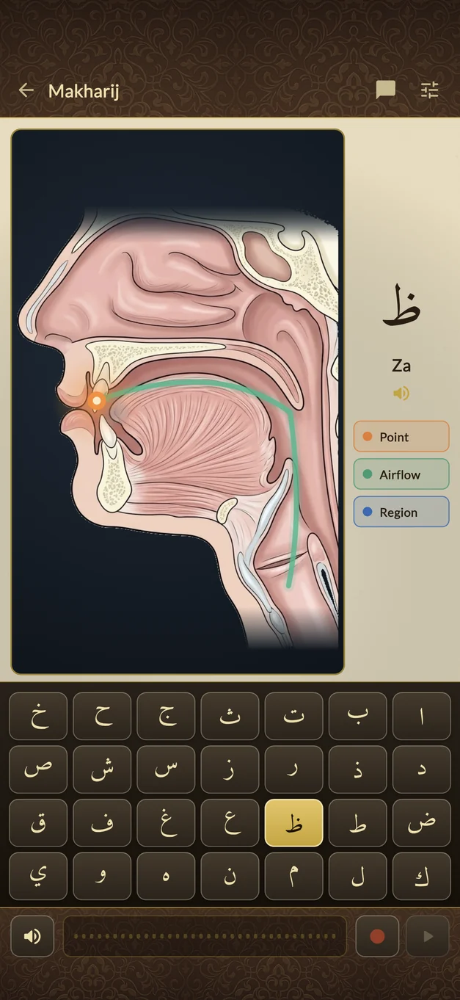
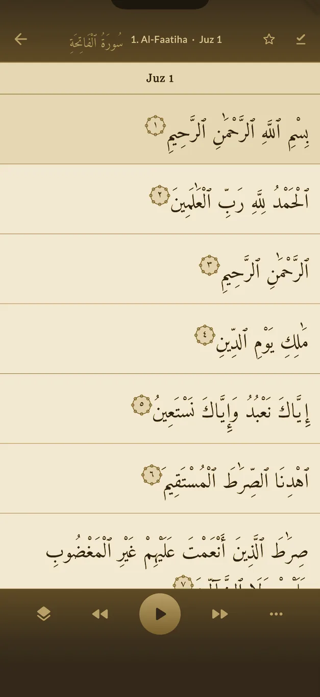

The text, and nothing else
Uthmani script, set in Amiri, with a medallion carrying the verse number in the digits a mushaf prints. No translation, no notes, no chrome over the page.
Illuminated headings, verse medallions, and the rules of recitation coloured into the letters. It opens on a book cover that keeps a record of every day you read — and the cover changes as the record grows.
Drag to walk the cover through five metals and seven worked steps each — thirty-five stages in all.
Everything else is a layer you add. Scroll, and the page beside this builds itself the way you would build it.
Uthmani script, set in Amiri, with a medallion carrying the verse number in the digits a mushaf prints. No translation, no notes, no chrome over the page.
Any edition the sources publish, chosen per reader and remembered. It sits under the verse rather than beside it, so the Arabic keeps the full width of the column.
Not a footnote about the rule — the rule, on the letter it applies to. Grey where a letter is not sounded, blue for the prolongations, orange for nasal resonance, red for the echo on a qalqalah.
A band where each juz begins, quieter ones for the hizb and its quarters, shown at whatever depth you choose — thirty marks, or ninety, or all two hundred and forty.
With reciters who publish timings, the word being spoken stays at full strength and the rest of the verse steps back. Nothing is boxed and no rule colour is displaced — the colour is already saying which rule applies.
Arabic alone
Colour alone names nothing, so the scheme is written down. Choose a rule to see every place it falls in Al-ʿAsr.
The scheme is the one published with the tajweed text, moved in lightness only so it reads on a dark ground. Hue is what carries the meaning, so hue never moves.
The app opens on a book, not a menu, and the book is worked by reading. Iron first. Platinum after three thousand days. Choose one to bring it forward.
Within each metal there are seven worked steps — raw, cleaned, filed, burnished, polished, mirrored, radiant — and the plate brightens through all of them before the next metal begins.
A day you read is worth +1. A day you miss costs −2, and it never falls below nothing. The metal, the step and the brightness within the step are all read off that single running total, which is why the cover can fall back as well as climb.
Every Arabic letter has a makhraj — a precise point in the throat, the tongue or the lips where it is formed. Get the point wrong and you have said a different letter: ص is not س, ح is not ه, ق is not ك. That is the difference between reciting the Quran and reciting something else.
Most apps leave you to work this out from a written description. This one shows you. Choose a letter and the cross-section marks the exact point of articulation, traces the path the breath takes, and names the region it belongs to. Each of the three can be turned off on its own, so you can study the point without the airflow drawn across it.
Then record yourself and play it back against the reference, as many times as it takes. All twenty-eight letters.

Follow a recitation word by word. Test what you have memorised. Trace a word back to its root and find everywhere else it occurs.

Analytics record which screens are used and for how long, so that what gets built next is what people actually reach for, and what gets fixed first is what is actually in the way. No identifier, no profile, nothing that could say who was reading what.